Running Two CRC Environments on the Same Computer
Introduction
In the world of software development and system testing, Container Runtime Environments (CRC) like OpenShift’s CRC are vital for creating and managing containerized applications. For developers or teams needing to work with multiple CRC environments on the same computer, understanding how to configure and run two instances simultaneously can be crucial for various testing or development scenarios. This guide walks you through setting up and managing two CRC environments on a single machine.
Why Run Multiple CRC Environments?
-
Testing Different Versions: You may need to test applications or features against different versions of CRC.
-
Isolated Environments: Running isolated environments helps prevent conflicts and ensures clean testing conditions.
-
Comparative Analysis: Allows for direct comparison of different configurations or settings.
Prerequisites
Before setting up two CRC environments, ensure you have the following:
-
Sufficient System Resources: Running multiple CRC instances requires more RAM and CPU. Ensure your system meets these requirements.
-
Latest CRC Versions: Ensure you are using the latest CRC versions to avoid compatibility issues.
Steps to Set Up Two CRC Environments
- Install CRC First, make sure CRC is installed on your machine. If you haven’t installed CRC yet, follow the official installation guide for your operating system.
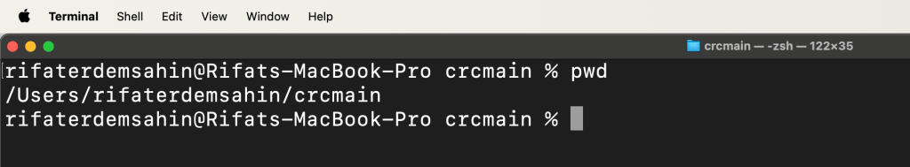
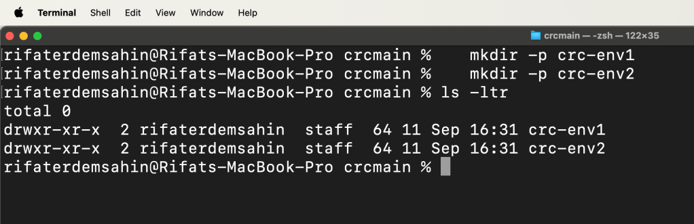
- Create Separate CRC Configurations Each CRC environment needs its own configuration to avoid conflicts. You can achieve this by creating different directories for each instance.
mkdir -p ~/crc-env1
mkdir -p ~/crc-env2
- Initialize CRC Instances Start by initializing the first CRC environment:
crc setup --config ~/crc-env1/crc-config
crc start --config ~/crc-env1/crc-config
Cant set it with the config
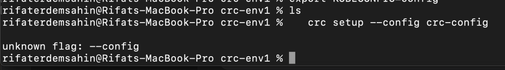
Google Search
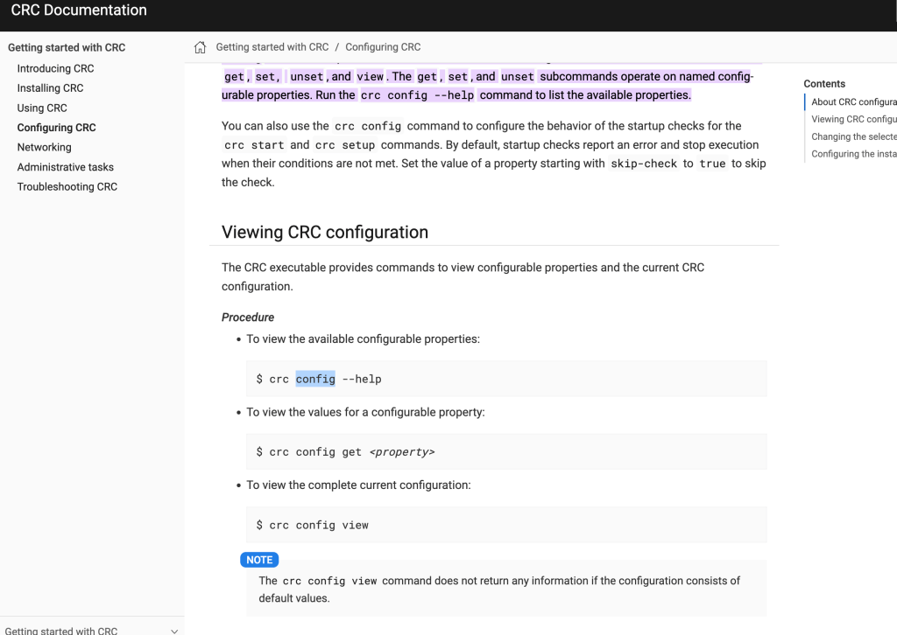
Maybe delete and recreate
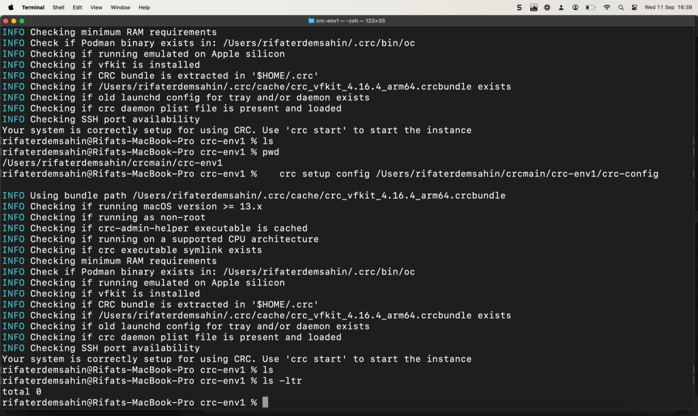
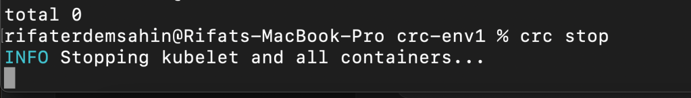
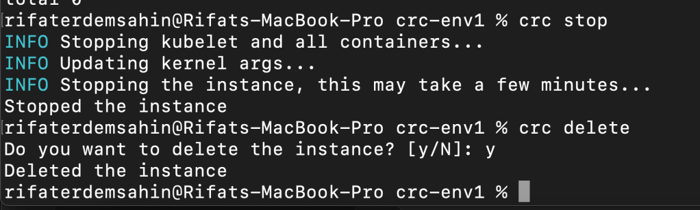
Repeat the process for the second environment, ensuring a different configuration directory:
Also new crc is here maybe the installed would fix that
crc setup config ~/crc-env2/crc-config
crc start config ~/crc-env2/crc-config
-
Managing Ports and Networks To avoid port conflicts between the two CRC environments, configure each instance to use different port ranges. You can specify this in the configuration files.
-
Switching Between Environments When working with multiple CRC environments, you’ll need to switch contexts. Use environment variables to manage which CRC instance you are interacting with.
export CRC_HOME=~/crc-env1
To switch to the second environment:
export CRC_HOME=~/crc-env2
- Verify the Setup To ensure that both environments are running correctly and are isolated, check the status of each:
crc status config ~/crc-env1/crc-config
crc status config ~/crc-env2/crc-config
Troubleshooting Common Issues
-
Port Conflicts: Ensure that each CRC environment is configured to use different ports.
-
Resource Constraints: If you experience performance issues, consider allocating more resources or running fewer instances.
-
Configuration Errors: Double-check configuration files for each CRC instance to ensure no settings are conflicting.
Conclusion
Running two CRC environments on the same computer can be highly beneficial for development and testing. By following the steps outlined above, you can efficiently set up and manage multiple instances, ensuring isolated and effective testing conditions. Always monitor system resources and be mindful of configuration details to maintain smooth operation of both environments.
Feel free to reach out with any specific questions or issues you encounter while setting up your CRC environments!
Conflicting Post > https://github.com/crc-org/crc/issues/935
Fails at this step >>> remove --

Verify the config to work
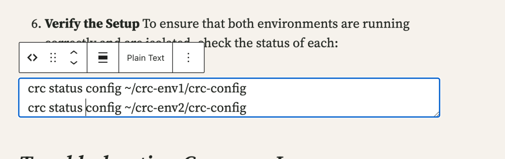
Config View is here
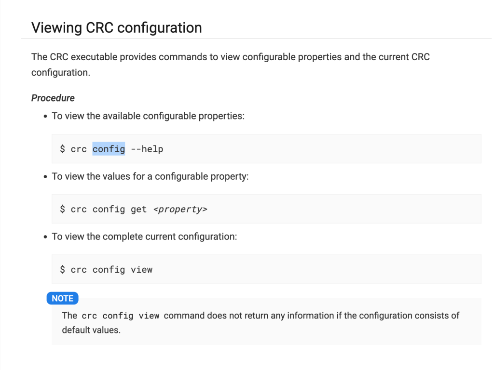
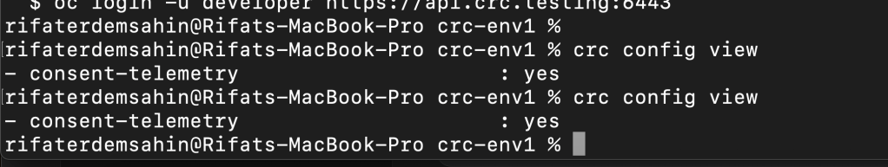
Stop and reinstall on mac
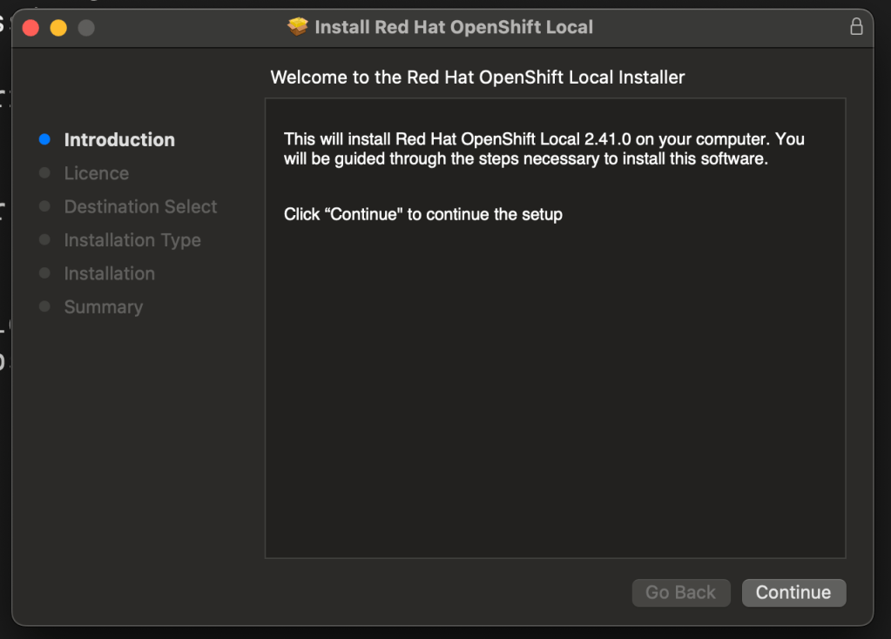
After update
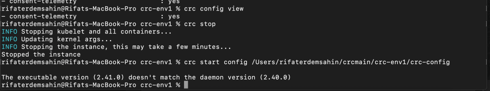
Restart and reinstall takes us to the config
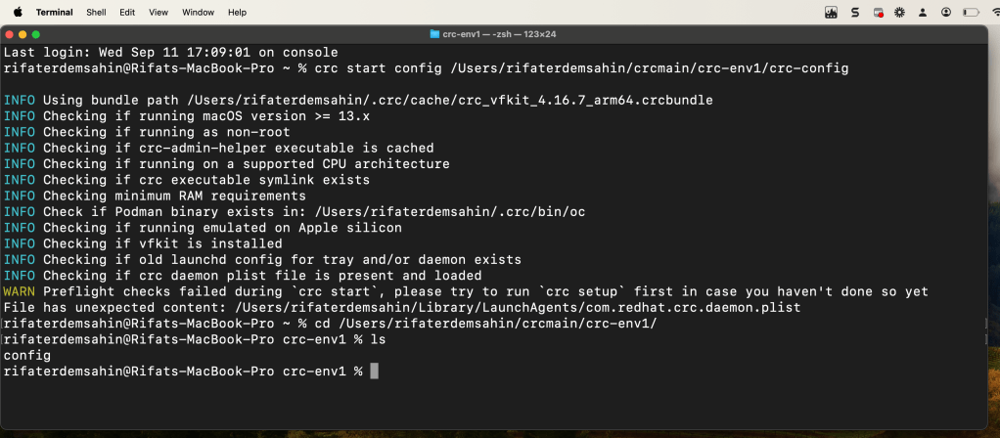
there is hope
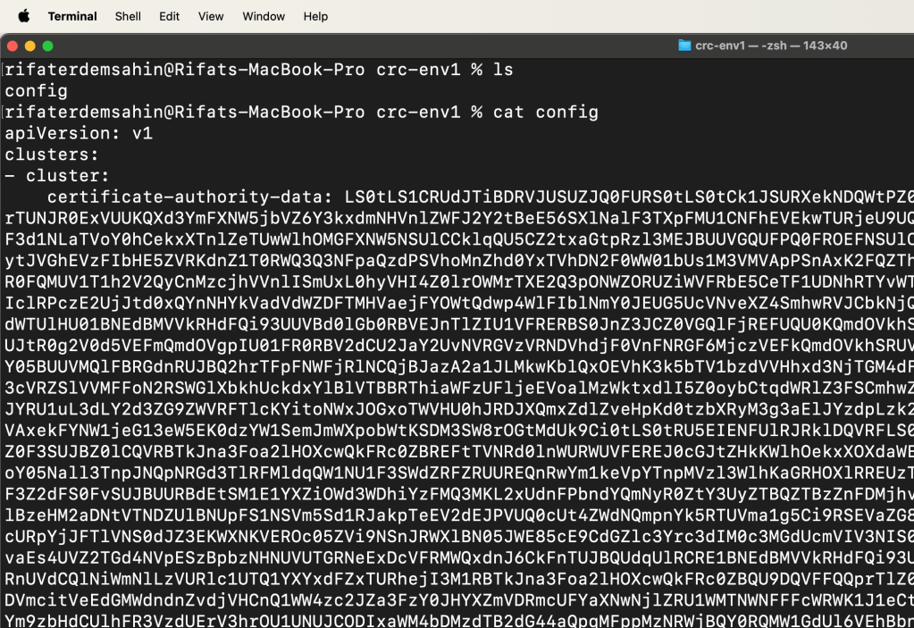
rifaterdemsahin@Rifats-MacBook-Pro crc-env1 % cat config
apiVersion: v1
clusters:
- cluster:
certificate-authority-data: LS0tLS1CRUdJTiBDRVJUSUZJQ0FURS0tLS0tCk1JSURXekNDQWtPZ0F3SUJBZ0lJRWxnV3l1ZTJ5VWt3RFFZSktvWklodmNOQVFFTEJRQXdKakVrTUNJR0ExVUUKQXd3YmFXNW5jbVZ6Y3kxdmNHVnlZWFJ2Y2tBeE56SXlNalF3TXpFMU1CNFhEVEkwTURjeU9UQTRNRFV4TmxvWApEVEkyTURjeU9UQTRNRFV4TjFvd0hURWJNQmtHQTFVRUF3d1NLaTVoY0hCekxXTnlZeTUwWlhOMGFXNW5NSUlCCklqQU5CZ2txaGtpRzl3MEJBUUVGQUFPQ0FROEFNSUlCQ2dLQ0FRRUFyTUlxcmJSUkVJKzBCaU13RnBNQWJFVTAKYzFKZUs3dmV0LytJVGhEVzFIbHE5ZVRKdnZ1T0RWQ3Q3NFpaQzdPSVhoMnZhd0YxTVhDN2F0WW01bUs1M3VMVApPSnAxK2FQZThoRFVxaWpCZEdIWXc0V3NJbnI0bWJTWDZ5UWZkRWVSckJXTDVvUStxSUNjR0FQMUV1T1h2V2QyCnMzcjhVVnlISmUxL0hyVHI4Z0lrOWMrTXE2Q3pONWZORUZiWVFRbE5CeTF1UDNhRTYvWTc5aTJFOFBoYlFTVXMKUkg1MWxWaXZJSmlhUzRBcWYzbEFOZmxOWVdVVHlIclRPczE2UjJtd0xQYnNHYkVadVdWZDFTMHVaejFYOWtQdwp4WlFIblNmY0JEUG5UcVNveXZ4SmhwRVJCbkNjQXZ2OG5KNXdrV2pxTkVqYjNYTU5CMStOTDV0dWFRZkNZd0lECkFRQUJvNEdWTUlHU01BNEdBMVVkRHdFQi93UUVBd0lGb0RBVEJnTlZIU1VFRERBS0JnZ3JCZ0VGQlFjREFUQU0KQmdOVkhSTUJBZjhFQWpBQU1CMEdBMVVkRGdRV0JCUkdLZ3hyaExuR2dYNC9aY0k3eUJtR0g2V0d5VEFmQmdOVgpIU01FR0RBV2dCU2JaY2UvNVRGVzVRNDVhdjF0VnFNRGF6MjczVEFkQmdOVkhSRUVGakFVZ2hJcUxtRndjSE10ClkzSmpMblJsYzNScGJtY3dEUVlKS29aSWh2Y05BUUVMQlFBRGdnRUJBQ2hrTFpFNWFjRlNCQjBJazA2a1JLMkwKblQxOEVhK3k5bTV1bzdVVHhxd3NjTGM4dFpsaWJYaGg2Z3grKzh6ellkVThkNFN0aXZEbGdlV3AvRHEvbm9hRgozcXM3cVRZSlVVMFFoN2RSWGlXbkhUckdxYlBlVTBBRThiaWFzUFljeEVoalMzWktxdlI5Z0oybCtqdWRlZ3FSCmhwZzdQZWE4NHpPWk9ITEZvbCtuRjF6L1BNaldkV3lsUnpEM2h3T1VaUUxzTlJYRU1uL3dLY2d3ZG9ZWVRFTlcKYitoNWxJOGxoTWVHU0hJRDJXQmxZdlZveHpKd0tzbXRyM3g3aElJYzdpLzk2WDdyVE14SjlxWE0vdXFsWGJybwpac2ZmeXBBWVV1aWNSMGxFZlEra0crcVAxekFYNW1jeG13eW5EK0dzYW1SemJmWXpobWtKSDM3SW8rOGtMdUk9Ci0tLS0tRU5EIENFUlRJRklDQVRFLS0tLS0KLS0tLS1CRUdJTiBDRVJUSUZJQ0FURS0tLS0tCk1JSURERENDQWZTZ0F3SUJBZ0lCQVRBTkJna3Foa2lHOXcwQkFRc0ZBREFtTVNRd0lnWURWUVFEREJ0cGJtZHkKWlhOekxXOXdaWEpoZEc5eVFERTNNakl5TkRBek1UVXdIaGNOTWpRd056STVNRGd3TlRFMVdoY05Nall3TnpJNQpNRGd3TlRFMldqQW1NU1F3SWdZRFZRUUREQnRwYm1keVpYTnpMVzl3WlhKaGRHOXlRREUzTWpJeU5EQXpNVFV3CmdnRWlNQTBHQ1NxR1NJYjNEUUVCQVFVQUE0SUJEd0F3Z2dFS0FvSUJBUURBdEtSM1E1YXZiOWd3WDhiYzFMQ3MKL2xUdnFPbndYQmNyR0ZtY3UyZTBQZTBzZnFDMjhvQk1WTUNpb2UwUEljK3lkSXpCeUNOYU0vS3JUb3B2Zk9keQp3VG9vWEpTclBzeHM2aDNtVTNDZUlBNUpFS1NSVm5Sd1RJakpTeEV2dEJPVUQ0cUt4ZWdNQmpnYk5RTUVma1g5Ci9RSEVaZG8zMDRCRnBYU0VtZ3ltZmYxNzNOSm1hQ2ZMSkJscWduY1RtUGJPWTdDeUhzcURpYjJFTlVNS0dJZ3EKWXNKVEROc05ZVi9NSnJRWXlBN05JWE85cE9CdGZlc3Yrc3dIM0c3MGdUcmVIV3NIS0tpWThmdDlGS055cHN2eQpUTml5RC8rUlN1U3JYb2V3bUhlMUFoR0VXeGcvaEs4UVZ2TGd4NVpESzBpbzNHNUVUTGRNeExDcVFRMWQxdnJ6CkFnTUJBQUdqUlRCRE1BNEdBMVVkRHdFQi93UUVBd0lDcERBU0JnTlZIUk1CQWY4RUNEQUdBUUgvQWdFQU1CMEcKQTFVZERnUVdCQlNiWmNlLzVURlc1UTQ1YXYxdFZxTURhejI3M1RBTkJna3Foa2lHOXcwQkFRc0ZBQU9DQVFFQQprTlZ0bkdwVm1TUGxyTG9vSGZqSUl1RFMva2RCTzl0WDJBb0JJbFJhVlFxcVE4TDVmcitVeEdGMWdndnZvdjVHCnQ1WW4zc2JZa3FzY0JHYXZmVDRmcUFYaXNwNjlZRU1WMTNWNFFFcWRWK1J1eCtWT3lkVGk2djVWbTVMZDJ6UUkKYzIzRXVNY0czbE5UWkhaWXZQZk5melJPYm9zbHdCUlhFR3VzdUErV3hrOU1UNUJCODIxaWM4bDMzdTB2dG44aQpqMFppMzNRWjBQY0RQMW1GdUl6VEhBbnRySUxCc09jbk5pK244LzBUbkxTNnRqOThkWVI5THZLUDQ3a2hNUWQ5CnZKbHJHUDRFdUJZajJ6dFJ4ZTRNd1ZBbzRqS2Nldi8yeW9zS0N0cDBlVXV4cGtyT2lJUXVia2VBTkNqRXFmdmgKM0c3LzRBZVJRcFRZcTJEY1JRaFA5UT09Ci0tLS0tRU5EIENFUlRJRklDQVRFLS0tLS0KLS0tLS1CRUdJTiBDRVJUSUZJQ0FURS0tLS0tCk1JSURXekNDQWtPZ0F3SUJBZ0lJRWxnV3l1ZTJ5VWt3RFFZSktvWklodmNOQVFFTEJRQXdKakVrTUNJR0ExVUUKQXd3YmFXNW5jbVZ6Y3kxdmNHVnlZWFJ2Y2tBeE56SXlNalF3TXpFMU1CNFhEVEkwTURjeU9UQTRNRFV4TmxvWApEVEkyTURjeU9UQTRNRFV4TjFvd0hURWJNQmtHQTFVRUF3d1NLaTVoY0hCekxXTnlZeTUwWlhOMGFXNW5NSUlCCklqQU5CZ2txaGtpRzl3MEJBUUVGQUFPQ0FROEFNSUlCQ2dLQ0FRRUFyTUlxcmJSUkVJKzBCaU13RnBNQWJFVTAKYzFKZUs3dmV0LytJVGhEVzFIbHE5ZVRKdnZ1T0RWQ3Q3NFpaQzdPSVhoMnZhd0YxTVhDN2F0WW01bUs1M3VMVApPSnAxK2FQZThoRFVxaWpCZEdIWXc0V3NJbnI0bWJTWDZ5UWZkRWVSckJXTDVvUStxSUNjR0FQMUV1T1h2V2QyCnMzcjhVVnlISmUxL0hyVHI4Z0lrOWMrTXE2Q3pONWZORUZiWVFRbE5CeTF1UDNhRTYvWTc5aTJFOFBoYlFTVXMKUkg1MWxWaXZJSmlhUzRBcWYzbEFOZmxOWVdVVHlIclRPczE2UjJtd0xQYnNHYkVadVdWZDFTMHVaejFYOWtQdwp4WlFIblNmY0JEUG5UcVNveXZ4SmhwRVJCbkNjQXZ2OG5KNXdrV2pxTkVqYjNYTU5CMStOTDV0dWFRZkNZd0lECkFRQUJvNEdWTUlHU01BNEdBMVVkRHdFQi93UUVBd0lGb0RBVEJnTlZIU1VFRERBS0JnZ3JCZ0VGQlFjREFUQU0KQmdOVkhSTUJBZjhFQWpBQU1CMEdBMVVkRGdRV0JCUkdLZ3hyaExuR2dYNC9aY0k3eUJtR0g2V0d5VEFmQmdOVgpIU01FR0RBV2dCU2JaY2UvNVRGVzVRNDVhdjF0VnFNRGF6MjczVEFkQmdOVkhSRUVGakFVZ2hJcUxtRndjSE10ClkzSmpMblJsYzNScGJtY3dEUVlKS29aSWh2Y05BUUVMQlFBRGdnRUJBQ2hrTFpFNWFjRlNCQjBJazA2a1JLMkwKblQxOEVhK3k5bTV1bzdVVHhxd3NjTGM4dFpsaWJYaGg2Z3grKzh6ellkVThkNFN0aXZEbGdlV3AvRHEvbm9hRgozcXM3cVRZSlVVMFFoN2RSWGlXbkhUckdxYlBlVTBBRThiaWFzUFljeEVoalMzWktxdlI5Z0oybCtqdWRlZ3FSCmhwZzdQZWE4NHpPWk9ITEZvbCtuRjF6L1BNaldkV3lsUnpEM2h3T1VaUUxzTlJYRU1uL3dLY2d3ZG9ZWVRFTlcKYitoNWxJOGxoTWVHU0hJRDJXQmxZdlZveHpKd0tzbXRyM3g3aElJYzdpLzk2WDdyVE14SjlxWE0vdXFsWGJybwpac2ZmeXBBWVV1aWNSMGxFZlEra0crcVAxekFYNW1jeG13eW5EK0dzYW1SemJmWXpobWtKSDM3SW8rOGtMdUk9Ci0tLS0tRU5EIENFUlRJRklDQVRFLS0tLS0KLS0tLS1CRUdJTiBDRVJUSUZJQ0FURS0tLS0tCk1JSURERENDQWZTZ0F3SUJBZ0lCQVRBTkJna3Foa2lHOXcwQkFRc0ZBREFtTVNRd0lnWURWUVFEREJ0cGJtZHkKWlhOekxXOXdaWEpoZEc5eVFERTNNakl5TkRBek1UVXdIaGNOTWpRd056STVNRGd3TlRFMVdoY05Nall3TnpJNQpNRGd3TlRFMldqQW1NU1F3SWdZRFZRUUREQnRwYm1keVpYTnpMVzl3WlhKaGRHOXlRREUzTWpJeU5EQXpNVFV3CmdnRWlNQTBHQ1NxR1NJYjNEUUVCQVFVQUE0SUJEd0F3Z2dFS0FvSUJBUURBdEtSM1E1YXZiOWd3WDhiYzFMQ3MKL2xUdnFPbndYQmNyR0ZtY3UyZTBQZTBzZnFDMjhvQk1WTUNpb2UwUEljK3lkSXpCeUNOYU0vS3JUb3B2Zk9keQp3VG9vWEpTclBzeHM2aDNtVTNDZUlBNUpFS1NSVm5Sd1RJakpTeEV2dEJPVUQ0cUt4ZWdNQmpnYk5RTUVma1g5Ci9RSEVaZG8zMDRCRnBYU0VtZ3ltZmYxNzNOSm1hQ2ZMSkJscWduY1RtUGJPWTdDeUhzcURpYjJFTlVNS0dJZ3EKWXNKVEROc05ZVi9NSnJRWXlBN05JWE85cE9CdGZlc3Yrc3dIM0c3MGdUcmVIV3NIS0tpWThmdDlGS055cHN2eQpUTml5RC8rUlN1U3JYb2V3bUhlMUFoR0VXeGcvaEs4UVZ2TGd4NVpESzBpbzNHNUVUTGRNeExDcVFRMWQxdnJ6CkFnTUJBQUdqUlRCRE1BNEdBMVVkRHdFQi93UUVBd0lDcERBU0JnTlZIUk1CQWY4RUNEQUdBUUgvQWdFQU1CMEcKQTFVZERnUVdCQlNiWmNlLzVURlc1UTQ1YXYxdFZxTURhejI3M1RBTkJna3Foa2lHOXcwQkFRc0ZBQU9DQVFFQQprTlZ0bkdwVm1TUGxyTG9vSGZqSUl1RFMva2RCTzl0WDJBb0JJbFJhVlFxcVE4TDVmcitVeEdGMWdndnZvdjVHCnQ1WW4zc2JZa3FzY0JHYXZmVDRmcUFYaXNwNjlZRU1WMTNWNFFFcWRWK1J1eCtWT3lkVGk2djVWbTVMZDJ6UUkKYzIzRXVNY0czbE5UWkhaWXZQZk5melJPYm9zbHdCUlhFR3VzdUErV3hrOU1UNUJCODIxaWM4bDMzdTB2dG44aQpqMFppMzNRWjBQY0RQMW1GdUl6VEhBbnRySUxCc09jbk5pK244LzBUbkxTNnRqOThkWVI5THZLUDQ3a2hNUWQ5CnZKbHJHUDRFdUJZajJ6dFJ4ZTRNd1ZBbzRqS2Nldi8yeW9zS0N0cDBlVXV4cGtyT2lJUXVia2VBTkNqRXFmdmgKM0c3LzRBZVJRcFRZcTJEY1JRaFA5UT09Ci0tLS0tRU5EIENFUlRJRklDQVRFLS0tLS0KLS0tLS1CRUdJTiBDRVJUSUZJQ0FURS0tLS0tCk1JSURRRENDQWlpZ0F3SUJBZ0lJZjdORDFoeTRDZ1V3RFFZSktvWklodmNOQVFFTEJRQXdQakVTTUJBR0ExVUUKQ3hNSmIzQmxibk5vYVdaME1TZ3dKZ1lEVlFRREV4OXJkV0psTFdGd2FYTmxjblpsY2kxc2IyTmhiR2h2YzNRdApjMmxuYm1WeU1CNFhEVEkwTURjeU9UQTNOVEExTlZvWERUTTBNRGN5TnpBM05UQTFOVm93UGpFU01CQUdBMVVFCkN4TUpiM0JsYm5Ob2FXWjBNU2d3SmdZRFZRUURFeDlyZFdKbExXRndhWE5sY25abGNpMXNiMk5oYkdodmMzUXQKYzJsbmJtVnlNSUlCSWpBTkJna3Foa2lHOXcwQkFRRUZBQU9DQVE4QU1JSUJDZ0tDQVFFQXFPN3J1Vm8xK284cAo2ODVpNXFzVmFmNHNhVE9oNFZQSS9jV3VEZXlIa3Uxa2hGcmlEUmJtaEtyekd3NEg2SkVScVF1LzFKdzRScXo4CklkcHV5UjNzZ1E3aDNDRUJkMkNYaU5iS1RHR3RCeUhhK2J4ZVFmWjRzQXZmdENRSTB3N2JjVVNERmREdUgvWXkKamt4ZjVLZDBUMDZNMWIzTUs0VWorVGNmVGpFNkJXaFpSYVRVcmE2em5SZVRzZUczeDA2VjJ0SXU3Qkc3MmJXdApYTFMrN0RKWEttNXVMalA0NmRhT0JwQzNUSGg1NGVpeG4vcVRINGFkVnhIWE9JL1czdjVzTUtlbzdrSEFBL0d4CktVdEdkckJoeUFjRWM3YzRqdGhtUkt3NWljUHpPY2F3TldNWDBNUjVOU25SbTl5YlQ1Skt6ZXBVaTd0NWw1QU4KV1p5bG1yc3E1d0lEQVFBQm8wSXdRREFPQmdOVkhROEJBZjhFQkFNQ0FxUXdEd1lEVlIwVEFRSC9CQVV3QXdFQgovekFkQmdOVkhRNEVGZ1FVSFBSTWRWM3VJTVRuMFVmbFlEdlVxZUpycDFzd0RRWUpLb1pJaHZjTkFRRUxCUUFECmdnRUJBR3ZhTHBlaHBTMUpUTjBVL3lqMTZxdWlhS1J2TSt5azlFWEJteGNlNTY3UmEwVHNVbi9zQTZ2SkFBM1oKbFltYUtBUVZoQk1sODk4c213OW1QblNrWFlvMHVlS3pobGVNNFpsL3hjc0lyNHJoSDlHNHpMMFU0em90aHJsRwp2ajVvS1VXeUN1YlMweU9NUHA2OWhuejZjMTc4OWhLOE5nRXErenVNbGZMM2ovbFc5eEUxcXFWeUlPbFhST1F4CitLaXAxNk5MN3JLRnNyci8vZ0pJbVk0czAzY2VYUHZTa0ZZcll6TGFUTlNEdVNZUHkrUzlDTnpxZ0xCVCsvQUcKdDRVU0lqQ2F3Z05NVGc1Q2lTc1ZBNUVXYWdCNk1EdEJpRnM3QlU4VTFCQ3ZuL29oc1o2K1M3K1BkZnU3YWY5ZApYQWtuam5NOENzNlNjd1lvcHB1aS9GTXNOWVE9Ci0tLS0tRU5EIENFUlRJRklDQVRFLS0tLS0KLS0tLS1CRUdJTiBDRVJUSUZJQ0FURS0tLS0tCk1JSURURENDQWpTZ0F3SUJBZ0lJTFRkbkxFc2YycEl3RFFZSktvWklodmNOQVFFTEJRQXdSREVTTUJBR0ExVUUKQ3hNSmIzQmxibk5vYVdaME1TNHdMQVlEVlFRREV5VnJkV0psTFdGd2FYTmxjblpsY2kxelpYSjJhV05sTFc1bApkSGR2Y21zdGMybG5ibVZ5TUI0WERUSTBNRGN5T1RBM05UQTFOVm9YRFRNME1EY3lOekEzTlRBMU5Wb3dSREVTCk1CQUdBMVVFQ3hNSmIzQmxibk5vYVdaME1TNHdMQVlEVlFRREV5VnJkV0psTFdGd2FYTmxjblpsY2kxelpYSjIKYVdObExXNWxkSGR2Y21zdGMybG5ibVZ5TUlJQklqQU5CZ2txaGtpRzl3MEJBUUVGQUFPQ0FROEFNSUlCQ2dLQwpBUUVBeGVNaHo1dkcrZlZPblpMN1JNajdHbUNuTEFTQlNTUHdZUkNFTXJPTFlJVXdkRlNCeDRleUJLQVdiTUNLCkZ5emFHRDcxQlVHWFBoVlpmZXdZMk5qalVwNjZoeXJrQVlubkxROXI1QWZ4RUM3UlJkS3EzM01QUWxOVnUzWHcKSHB1ZU9HcVdWMWNSdEtFdjJZK05lQ29JRzFGdk9ZU3VxVzJycGpDeTRDbk4xUHhvWTBFWkVGQnJTT2NBcC9UaQpzM25oLzRBTHF0dlQrOCtIT0EvR0ZiZG5Dc1dteU9Vc1lud05yeXFMTGpuRVBpRFpib3BvcTFHY2w3ZjI4NWZ2CmlWZzR6ZEN1T09Hc1MxK0NvS0poNmgrTjdpRHRRdm9yWitQeGJvUlAvdnMxMGtDc3Y4OWx4NTBBWVZycU1mRU4KV045b2VRMXBieU5aSVNzOCt4YkZnSWhuclFJREFRQUJvMEl3UURBT0JnTlZIUThCQWY4RUJBTUNBcVF3RHdZRApWUjBUQVFIL0JBVXdBd0VCL3pBZEJnTlZIUTRFRmdRVWFDY1hZcVJUMHlZaWdGc0tid2w1Uk4xWFlYd3dEUVlKCktvWklodmNOQVFFTEJRQURnZ0VCQUNnN0M1b2hUQmFESGY5eC9GRE1lZEZjUUZQb3kvWTZlelF6N25PbmRNWE0KbHZaZ3RXVTRqa1dIM2kvb0JyblZ3SjYwZ2R0cnhKYlFsTS9zckp3dW9lK2RlWllqeXVZKzNIbkdhL2tudnU0VApyMUVFazJXd0tXNnFRZWh5eFhyVVM5cnRqS0FMdERDOWFBNnFGVSttOFlHS3ZRVUVuTlNaT0pHWGhrV2VzK1Q2CnNxdDFZbjdiQS80d0dWay8renFmTFJlMUp6R3QyUDhaSXI1ZFNGM0NyOWExU2g0TDZzeXV6aTBXbmtaNDNBRjAKUHBITjFuUXVKc3lqOTVuems3RzRmVHNYajdUcXl3SndydEordlV3a3pDUDJXTXBVczE0eXFEaVh6di9BNkNITgpaOFhjYnBLVDJ3WVladUswVnVKbGhzcEFGUyt2SmMxb0d4Q0pJWEJJckpBPQotLS0tLUVORCBDRVJUSUZJQ0FURS0tLS0tCi0tLS0tQkVHSU4gQ0VSVElGSUNBVEUtLS0tLQpNSUlETWpDQ0FocWdBd0lCQWdJSVVXS0FyaThnQVhNd0RRWUpLb1pJaHZjTkFRRUxCUUF3TnpFU01CQUdBMVVFCkN4TUpiM0JsYm5Ob2FXWjBNU0V3SHdZRFZRUURFeGhyZFdKbExXRndhWE5sY25abGNpMXNZaTF6YVdkdVpYSXcKSGhjTk1qUXdOekk1TURjMU1EVTJXaGNOTXpRd056STNNRGMxTURVMldqQTNNUkl3RUFZRFZRUUxFd2x2Y0dWdQpjMmhwWm5ReElUQWZCZ05WQkFNVEdHdDFZbVV0WVhCcGMyVnlkbVZ5TFd4aUxYTnBaMjVsY2pDQ0FTSXdEUVlKCktvWklodmNOQVFFQkJRQURnZ0VQQURDQ0FRb0NnZ0VCQVBUbGY5MTRyK3Jjd2F1d2RSOWZjY3dkNi95SzQwU0YKZWFpUW5lMTJwYkJmMUlUaUMvcW56cGdEMDczS3dTKzJRdmlxbHlpY05HZUwyWDZUcE5wbm1oeDZQYWpkRXk1VQpCa2MvNUY4VGR4ZUJXbGh6cTNpUnVsSnBVZzZDNnMvdURVYTdiZlFXZjI3Y3J1UjJwRnAzeVBTdC9iNFFxWXV3CkhWUHoxQk5ralhhVjAxUU01SHBMSkpCb1kzMlR4NFdCQzlIUTQzNWU3MG5PWk4vdTFmS2lKV1YxVXk0ejBmQ2cKZWkxV25talBjVDdnM1FOYnZTZ0hIZk9lQ2U4dUtaeG9sVHkxUXpMWXMrWG9NQjdzdS9RZlQ0WkwrWHl6WXBRMgpDV3JDcm11VDlrTjhrbXRVSi9za2MrSGU1WjNIYlBIeXNNSHo0aWFQbEFMWm1OakIwQ3RFbEFjQ0F3RUFBYU5DCk1FQXdEZ1lEVlIwUEFRSC9CQVFEQWdLa01BOEdBMVVkRXdFQi93UUZNQU1CQWY4d0hRWURWUjBPQkJZRUZEdVgKSWhXa3JUNkdXejBlRXFLeHlBRmhwWHVzTUEwR0NTcUdTSWIzRFFFQkN3VUFBNElCQVFEVHRkOTNINkkwaWdlZgo4RU1JcjJRbVJyWVdxZDJNN3ByUG9EL3V5aWpqVVhKK1JhaWFFQlpCUWRNWWxpU2s3UWJYNjhod2VhaVVseEk1Cm43L0JxdzJYRWY5aWVFOW9JdlhzRitZWGRSTmhFb3lpb3BzeE92Tzd0bFYwUWJMQnZMaFRRSlRZUU82azdvSzEKc0g1WTVFdnNJaU5hVXB5OFJOWk1KbnVKMEVNVjIvUUlFTFNLK1hHL3VkOVY3Tm1JdmhtTzhDMUhQbG8zUUtISAoxYXRRQlpNV3Z3NDNJTmwvQUE4czlwMWhsWXk2N2FBZGVEaE1nU3lPQWpKaFJXSUcxZnJYTmVkOHlOTS9iZHRrClNLc21yK0NUVmZUNVMyaUp5dzlkM01JSThqN0VWTytXYUhySUJFOGZmYjZVKzFzUndyWmZEbVQwM3luTkFaRkIKTEVydTJRVFMKLS0tLS1FTkQgQ0VSVElGSUNBVEUtLS0tLQo=
server: https://api.crc.testing:6443
name: api-crc-testing:6443
contexts:
- context:
cluster: api-crc-testing:6443
namespace: default
user: kubeadmin/api-crc-testing:6443
name: crc-admin
- context:
cluster: api-crc-testing:6443
namespace: default
user: developer/api-crc-testing:6443
name: crc-developer
current-context: crc-admin
kind: Config
preferences: {}
users:
- name: developer/api-crc-testing:6443
user:
token: sha256~4EYMkEVtBs8wRefTmbsS0kDF5GTpSmKRUaPNE-1fTNk
- name: kubeadmin/api-crc-testing:6443
user:
token: sha256~QgSeTbTPIqSVb5ycXE8x_HFyI_OD-gyUdk0jFxOGwyI
A new download on its way
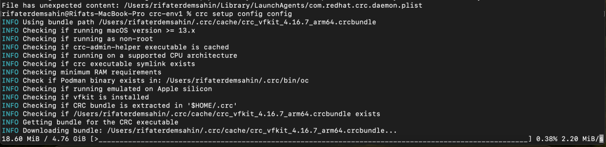
Takes time to install it
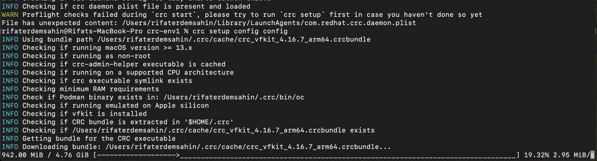
Imported from rifaterdemsahin.com · 2024